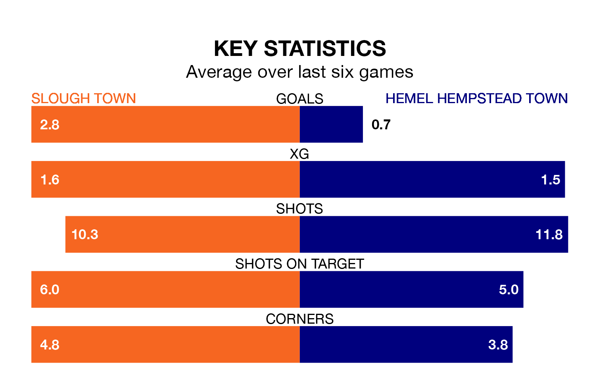

Hemel Hempstead Town travel to Arbour Park for Tuesday's late match against Slough Town looking to bounce back from defeat last time out in National League North and South.
The Tudors, who sit zero in the league after 22 games, fell to a 3-2 away defeat to Torquay United on Saturday.
They face a Slough side who secured a draw in their last match, a 2-2 tie with Farnborough, and who sit zero in the table.
With 35 goals in 19 games so far this season, Slough are scoring more than average in the league with 1.8 goals per game. But they are conceding more than average too, letting in 33 goals at a rate of 1.7 per game.
Hemel Hempstead, meanwhile, are below average scorers, with 1.1 goals per game, compared to a league average of 1.4. They have conceded 1.3 goals per game.
Slough Town are in reasonable form in National League North and South, with three wins and two draws from their last six games.
With a win and a draw over that period, Hemel Hempstead Town's form is much worse – they have taken four points from 18, compared to the home team's 11.
In the last three years, Slough and Hemel Hempstead have played each other on four occasions. Slough won one of them, Hemel Hempstead two, and they drew once.
On average, Slough scored 1.0 goal and the Tudors 1.2 in those matches.
Their last meeting was on April 1, when Hemel Hempstead won 1-0 at home.
